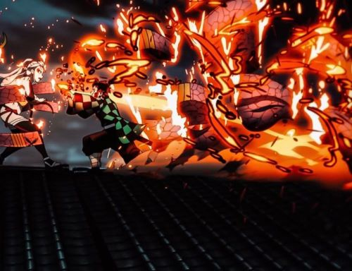

welcome to the anime website . Everything you need to know about the anime is written here
L is the smartest detective i've ever seen
actually you can't tell what to do when you are lost and you think you don't have a choice, you see i miss nezuko and i really want to talk to her in the last days i almost died but yet i have to calm down maybe but i really miss her so much and i want to hold her hand is it right to continue and move on? . then i ask myself again and again and again when will we know it's enough and the song goes across my mind and the memories start to floud inside my mind. and i can't tell why , maybe because it's shoogaze no body can tell but i miss you my love as i wil always do and i will always love you and i will give you my sucsses to you and only to tou my beloved one.. your beloved boy: rio.
actually you can't tell what to do when you are lost and you think you don't have a choice, you see i miss nezuko and i really want to talk to her in the last days i almost died but yet i have to calm down maybe but i really miss her so much and i want to hold her hand is it right to continue and move on? . then i ask myself again and again and again when will we know it's enough and the song goes across my mind and the memories start to floud inside my mind. and i can't tell why , maybe because it's shoogaze no body can tell but i miss you my love as i wil always do and i will always love you and i will give you my sucsses to you and only to tou my beloved one.. your beloved boy: rio.